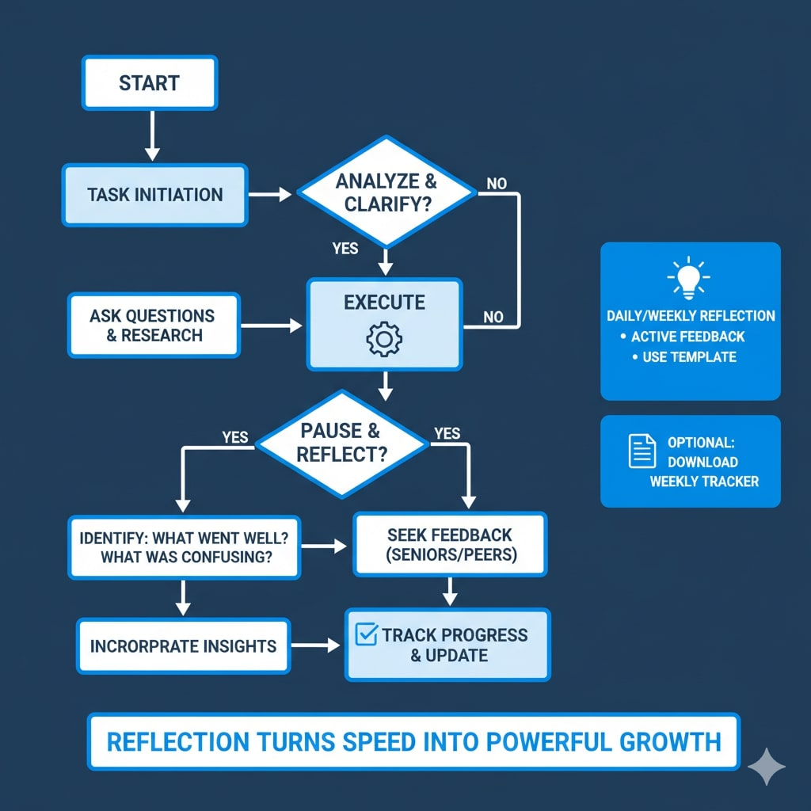

Starting your career often feels like a race where everyone else seems ahead. You want to do more, move faster, and check boxes. But moving fast without thinking is the quickest way to get lost. Many freshers and even mid-level professionals confuse busyness with progress, diving into tasks without pausing to reflect. The result? Mistakes, wasted effort, and unnecessary stress.
Reflection isn't wasted time — it's the engine that makes speed meaningful. Even a few minutes to think about what worked, what didn't, and what could improve next week transforms small errors into structured lessons and builds confidence. Pair this with tracking your work, and you ensure that every effort is purposeful and visible.
Why Reflection Matters
For Freshers:
- You might think completing tasks quickly proves your value.
- Reality: Companies notice clarity, thoughtfulness, and the ability to learn far more than speed alone.
- Quick wins: Daily 10-minute reflection, asking clarifying questions, and noting key learnings.
For Mid-Level Professionals:
- Juggling multiple priorities and deadlines can make you move fast, but without reflection, speed often leads to stress and stagnation.
- Quick wins: Weekly reflection sessions, midweek check-ins, and structured feedback loops.
Actionable Steps for Purposeful Work
Use the flowchart below as a guide. Here's how to translate it into practice:
- Analyze requirements before starting a task — avoid rushing in blindly.
- Understand existing workflows — prevent reinventing the wheel.
- Ask clarifying questions — don't assume anything.
- Set realistic timelines — include buffer for testing or revisions.
- Maintain a weekly status update — track progress for yourself and your manager.
- Incorporate feedback immediately — reflection isn't passive; it's iterative.

Even a simple habit like daily or weekly reflection separates those who plateau from those who grow quickly.
1-Week Roadmap for Growth
Freshers:
- Monday: Understand tasks, ask 3–5 clarifying questions
- Tuesday: Analyze workflow and dependencies
- Wednesday: Start execution with a clear timeline
- Thursday: Midweek check-in, incorporate feedback
- Friday: Complete tasks, reflect on lessons learned, plan improvements
Working Professionals:
- Monday: Review priorities, plan workflow
- Tuesday: Execute tasks, track blockers
- Wednesday: Midweek team sync, request feedback
- Thursday: Continue tasks, adjust based on feedback
- Friday: Weekly wrap-up, track progress versus goals, plan next week
Practical Tips to Implement Today
- Block 10–20 minutes daily or weekly for reflection.
- Actively seek feedback from seniors or peers.
- Track weekly status — even simple bullet points work.
- Maintain a reflection template:
- What went well this week?
- What confused me?
- What's my next actionable step?
- Celebrate small wins and identify learning opportunities every week.
Reflection Turns Speed into Powerful Growth
Speed alone may make you look busy, but structured reflection ensures you're not just moving fast — you're moving in the right direction. This weekend, pause, reflect, and plan your next steps. Ask questions, track your progress, incorporate feedback, and remember: reflection isn't slowing you down — it's what makes speed truly powerful.
"Reflection transforms speed into meaningful growth."
Visual Reference: Use the attached flowchart as a roadmap for reflection. Notice how task initiation, execution, reflection, and feedback form a cycle that compounds growth over time.
Leave a Thought
Your feedback or thoughts on this post are welcome.